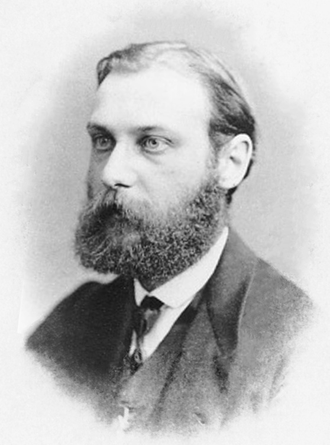
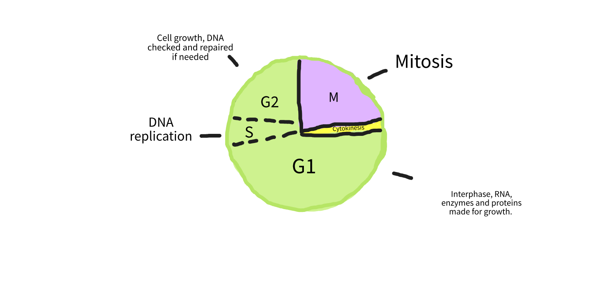
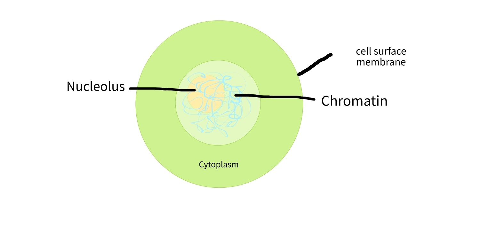
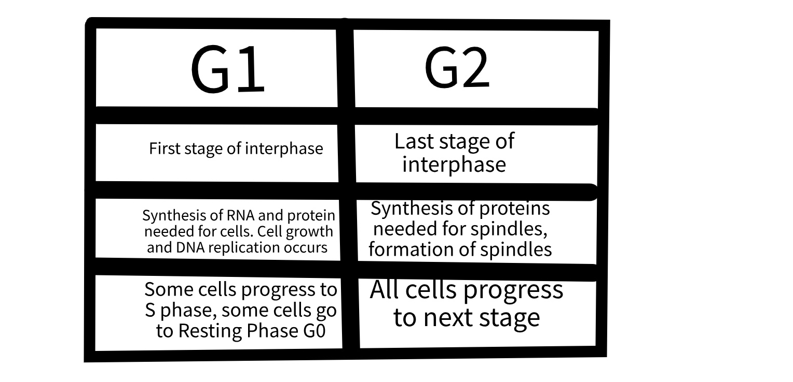

Mitosis and The Cell Cycle
'Are you stuck on your biology homework or simply wondering about how and why mitosis is so important for cellular homeostasis?' You've come to the right place!
It all started when
Walther Flemming, a German scientist, discovered mitosis in the 1800s.
He was a cytogeneticist, or someone who studies chromosomes. He stained cells with specialised dyes, allowing him to see and identify the chromosomes within them. He studied the various stages of 'mitosis', which he named after the Greek word 'thread' because the chromosomes resembled tiny coiled threads.
Mitosis and the cell cycle are essential for life. Think of them as your body’s way of making sure everything stays in order. Every time we grow, heal, or simply maintain ourselves, cells need to divide and create new ones. That’s where mitosis comes in—it’s the process that ensures each new cell is an exact copy of the one before it, keeping everything working as it should. And that is why, you should learn more about it!
The Mitotic Cell Cycle
Mitosis is a fundamental process that divides a single cell into two identical daughter cells. This cycle is necessary for growth, tissue repair, and cellular regeneration in all living organisms, including humans.
Figure 1.1:
All living organisms grow, die, and reproduce. We are all made out of cells, and just like us, they also grow, die, and reproduce. However, cells reproduce differently, by dividing and passing on their genes to their ‘daughter’ cells. This process is controlled so that their genetic data is not lost and they are not over-reproducing. The cell cycle is the sequence of events that lead to two genetically identical cells. There are three important phases which you need to know: Interphase, nuclear division, and cell division.
Here's a simple breakdown:
- Growth (G1 phase): The cell gets bigger and makes proteins and organelles it needs to function.
- DNA Replication (S phase): The cell copies all its DNA so that when it divides, each new cell will have a complete set.
- Final Prep (G2 phase): The cell checks everything—if the DNA was copied correctly and if it’s ready to divide.
During Interphase and G1
Interphase is the phase where the cell gets ready to divide, and it's like the "prep work" before mitosis. During this time, the cell is busy growing, copying its DNA, and making sure everything is set for the actual division.
In Figure 1.2, you can see that the Nucleolus and the Nuclear Envelope, which is around the Nucleolus, are visible, and the chromosomes are in thread-like shapes. If the cell was ordered to divide, then the cell prepares itself for the S phase.
Quick Note: Interphase consists of G1, S, and G2 stages.
Figure 1.2: Diagram of Interphase showing the Nucleolus and Nuclear Envelope.
S Phase and G2
The S phase is when the cell makes a complete copy of its DNA. It’s like doubling the instructions so each new cell gets the full set when the cell eventually divides. The G2 phase is the final checkpoint before division. The cell checks the newly copied DNA for errors and makes any final preparations, ensuring everything is ready for a smooth division into two healthy cells.
In the S phase (Synthesis phase), the cell is busy making a complete copy of its DNA. Think of it as preparing a recipe: the cell carefully unwinds its DNA strands and uses special enzymes to duplicate them. By the end of this phase, each chromosome has two identical copies, called sister chromatids, held together at a spot known as the centromere. This duplication is super important because, when the cell divides later, each new cell needs to have an exact copy of the genetic instructions to function properly.
After the S phase, we move into the G2 phase. This is like a final check before the big event. The cell takes a moment to double-check the DNA it just copied, looking for any errors or issues that need fixing. If any mistakes are found, the cell can repair them to ensure everything is accurate. The cell also grows a bit more during this time and gets ready for mitosis by producing proteins and structures that will help during cell division. It’s all about making sure the cell is fully prepared before it takes the next big step and splits into two new cells.
Mitosis
Mitosis is the process by which a single cell divides into two identical daughter cells, each with the same number of chromosomes as the original cell. It’s essential for growth, tissue repair, and replacing old cells. The process has four main stages:

Figure 1.4: Illustration of the stages of mitosis.
Prophase: This is the first stage of mitosis. The DNA inside the nucleus condenses into visible structures called chromosomes, which are made up of two identical halves known as sister chromatids, held together at a point called the centromere (see figure 1.4). The nuclear envelope, which surrounds the nucleus, begins to break down, and chromosomes begin to move freely within the cell. Additionally, the mitotic spindle starts to form from the centrosomes (the cell’s organizing centres). The chromosomes appear shorter and thicker, so when dyed they become visible to the microscope.
Metaphase: In this second stage, the chromosomes line up along the centre of the cell, known as the metaphase plate. The spindle fibres, which are attached to the centromeres of the chromosomes, ensure that each chromosome is properly aligned in the equator and connected to the polar spindles. This alignment ensures that each new cell will receive an identical set of chromosomes during the next phase.
Anaphase: During the third phase, the sister chromatids are pulled separate and moved toward polar ends of the cell. The spindle fibres shorten, separating the chromatids at the centromere and ensuring that each new cell will have the same genetic information. This guarantees that each daughter cell who carry one molecule of DNA will receive one copy of each chromosome.
Telophase: This final stage of mitosis involves the reformation of the nuclear envelope around the separated sets of chromosomes at each end of the cell. The chromosomes begin to unwind into their chromatin form, making them less visible compared to the first stage. The spindle fibres disassemble, and the cell prepares for the final step of division, which is cytokinesis. You can see in image 1.4 that the division begins with the division of the cytoplasm and the spindles breaking down. Nuclear envelope reforms, nucleolus reforms.
Cytokinesis & Questions
Cytokinesis is the final step in cell division, right after mitosis. While mitosis ensures that the cell’s genetic material is evenly split, cytokinesis divides the rest of the cell, like the cytoplasm and organelles, into two separate daughter cells. It’s the process that physically splits the cell in half, completing the creation of two distinct cells.
After the chromosomes have been separated during mitosis, cytokinesis divides the cell’s cytoplasm, resulting in two identical daughter cells. In animal cells, this happens when the cell membrane pinches in the middle, forming a structure called the cleavage furrow, until the cell splits. In plant cells, a cell plate forms down the middle, which eventually becomes the new cell wall. This ensures that each daughter cell gets everything it needs to function, like organelles and cytoplasm, along with the DNA it received during mitosis.
Questions for you to test yourself!
- What is mitosis and why is it important for living organisms?
- Can you name and briefly describe the four stages of mitosis?
- What role do spindle fibres play during mitosis?
- What happens during prophase, and why is it significant?
- During which phase of mitosis do the chromosomes align in the centre of the cell?
- How are sister chromatids separated during anaphase?
- What happens to the nuclear envelope during mitosis?
- How does telophase prepare the cell for cytokinesis?
- What is the cell cycle, and what are its main phases?
- How does interphase relate to mitosis?
- What is the significance of the S phase during the cell cycle?
- What happens during the G1 and G2 phases of interphase?
- How do checkpoints in the cell cycle help prevent errors during cell division?
- What is the role of the G0 phase in the cell cycle?
- Why is the regulation of the cell cycle important for preventing diseases like cancer?
- How does the cell ensure each daughter cell gets the correct number of chromosomes?
- What is the difference between mitosis and cytokinesis in terms of their roles in cell division?
Contact Us
Contact us:
Address:
Hogeschool Inholland Haarlem
Bijdorplaan 15
2015 CE Haarlem
Phone: 0123456789
Email: hello@gmail.com